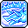
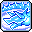
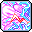
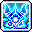
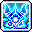

Buccaneer Basics
This page contains an overview of the class and how to get started with it. This page assumes you are already familiar with Maplestory (gear, grinding, general progression).
If you're going to read anything, at least read the content on this page.
About the classs
Buccaneer is a branch of the Explorer Pirates that uses
Knuckles and
 Wrist Bands as
their primary and secondary weapons respectively. The Buccaneer is generally characterized by its
close ranged attacks, ability to deal consistent amounts of damage with its trademark skill 
Lord of the Deep, incredible mobility around the
fight, and low barrier to entry making it a
popular choice as a secondary character.
Wrist Bands as
their primary and secondary weapons respectively. The Buccaneer is generally characterized by its
close ranged attacks, ability to deal consistent amounts of damage with its trademark skill 
Lord of the Deep, incredible mobility around the
fight, and low barrier to entry making it a
popular choice as a secondary character.
However, that doesn't mean Buccaneer isn't fit to be your main character! While it may be simple to deal damage to monsters in a boss fight, mastering all of the different movement abilities takes time and effort. An experienced Buccaneer player is constantly moving around the boss and dodging attacks while managing to dish out loads of damage, resulting in a very flashy and satisfying playstyle.
Why choose Buccaneer?
Buccaneer is an all-rounder class that excels in all stages of the game, from start to end.
Advantages of playing a Buccaneer
Simple but effective playstyle
Outside of your burst and mobility skills, Buccaneer's bossing kit consists of 1 active skill:

Octopunch. All other bossing skills ( 
 
)
are passive skills that activate automatically.

)
are passive skills that activate automatically.
More mobility skills than collective player IQ
Buccaneer is one of the most mobile classes in Maplestory, and some would argue is the most mobile. It has a wealth of mobility skills and techniques that can be applied to just about every bossing situation. moretobeadded i'm tired
Straightforward and safe burst
Buccaneer's burst is very easy to execute:
-
Activate your burst skills and buffs


 -
now
made easy with the Buff Sequence!
-
now
made easy with the Buff Sequence!
- Use Unleash Neptunus if available
- Throw your three Lightning Form balls
- Use Howling Fist and dump any available Serpent Vortex charges
Frequently Asked Questions
Q: Does Lord of the Deep have 100% uptime?
A:
As of Destiny, Lord of the Deep is now 100% uptime, provided you are able to defeat
monsters with one tick of the skill. Lord of the Deep is allowed to proc
100 times before it expires. When you are hitting a boss monster, three activations of the skill count
as one, allowing you to proc 300 times.
It also has a sixty second cooldown which can be reduced in 3 ways:
- Killing 40 mobs will reduce the cooldown by ten seconds.
- Deactivating the skill will reduce the cooldown by 6 seconds for every ten remaining hits you have.
- Stimulating Conversation will reduce the cooldown by 50%.
Q: Why do we boost Corkscrew Blow in the V-Matrix?
A: There are five recommended skills to boost; Corkscrew Blow just
happens to be the
next best choice to fill the sixth slot.
Other skills like Static Thumper and Turning Kick are not utilized
after 5th job.
Q: Which Special Skill Ring should I use?
A: Ring of Restraint is the best ring of all time. It's the Michael Jordan of
Maplestory.
Q: Do I need critical rate for bossing?
A: Nope
Q: Do I need critical rate for bossing?
A: Nope
Basic Mechanics
I'm super cool zoom zoom
Advanced Mechanics
Lightning form go brrr